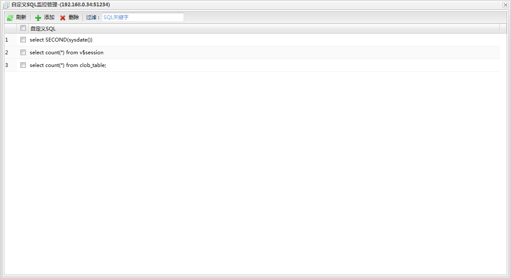
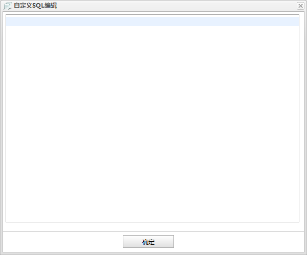

刷新
刷新 添加
添加 删除
删除若已有的监控项无法满足需求，用户可以自定义sql语句进行监控。但是若想用曲线图显示监控历史信息或者想对自定义sql添加告警则要求sql语句是查询语句且查询结果为数值类型。单实例的自定义SQL监控管理入口在自定义SQL监控面板的功能按钮添加/删除，而集群的自定义SQL监控管理入口在数据库监控面板中的集群分组的操作下拉菜单中的自定义SQL监控管理。对于集群的自定义SQL监控添加，会同时在集群的所有站点上添加；同样的删除时也会删除所有站点上的自定义SQL监控。管理对话框如下图所示:

功能按钮列表| 按钮 | 说明 |
|---|---|
| 刷新 |
刷新自定义SQL列表。 |
| 添加 |
添加监控表。点击打开自定义SQL监控添加对话框。 |
| 删除 |
删除自定义SQL。 |
| 过滤 | 自定义SQL列表的sql内容过滤。输入框中输入内容按回车。 |
监控表列表
| 字段 | 说明 |
|---|---|
| 自定义SQL | 自定义SQL语句。 |

编辑框中输入自定义SQL语句。